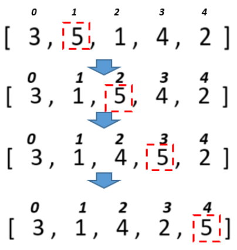

Задачі:
-
Задача №1
Дано масив 30 випадкових цілих чисел. Підрахувати скільки було обмінів та порівнянь чисел під час сортування бульбашкою
-
Задача №2
Дано масив 30 випадкових цілих чисел. Підрахувати скільки було обмінів та порівнянь чисел під час сортування змішуванням.
-
Задача №3
Дано масив 30 випадкових цілих чисел. Підрахувати скільки було обмінів та порівнянь чисел під час сортування включеннями.
-
Задача №4

Для розглянутих методів сортування спробувати вивести етапи сортування шляхом виведення відповідних таблиць за зразком.
Тобто кожного разу після обміну елементів вивести поточний стан масиву на екран (стрілки не потрібні).
-
Задача №5
Дано масив імен. Застосовуючи відповідне сортування та бінарний пошук визначити, чи є у масиві ім’я «Olga» і під яким індексом.
-
Задача №6
Дано масив імен. Застосовуючи відповідне сортування та бінарний пошук визначити, чи є у масиві ім’я довжиною 5 символів і під яким індексом.